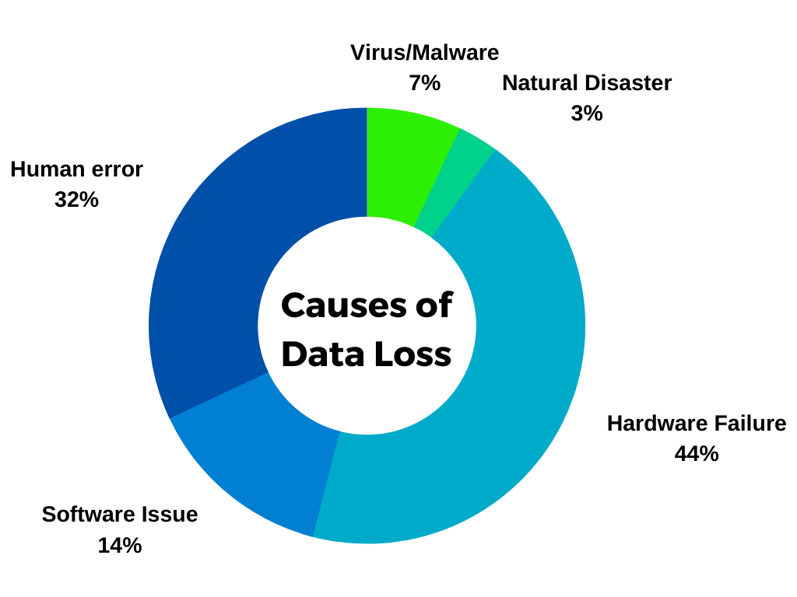

Backups are copies of your data that you can restore if the original is lost or damaged. They can reduce losses caused by a cyberattack, an unexpected device failure, or a natural disaster. If ransomware locks your files, a separate, up-to-date backup can give you another way to recover them and may help you avoid paying a ransom.
As an individual or household, start with data that would be difficult or impossible to replace, such as family photos, personal documents, and other important or sentimental files.
The infographic summarizes data-loss statistics (StepUp, 2024).
Backups can be stored on-site, off-site, or in the cloud. Each option has different benefits and risks:
Cybersecurity organisations, including the Canadian Centre for Cyber Security, recommend the 3-2-1 rule to help keep enough copies of your data in different places and storage types: